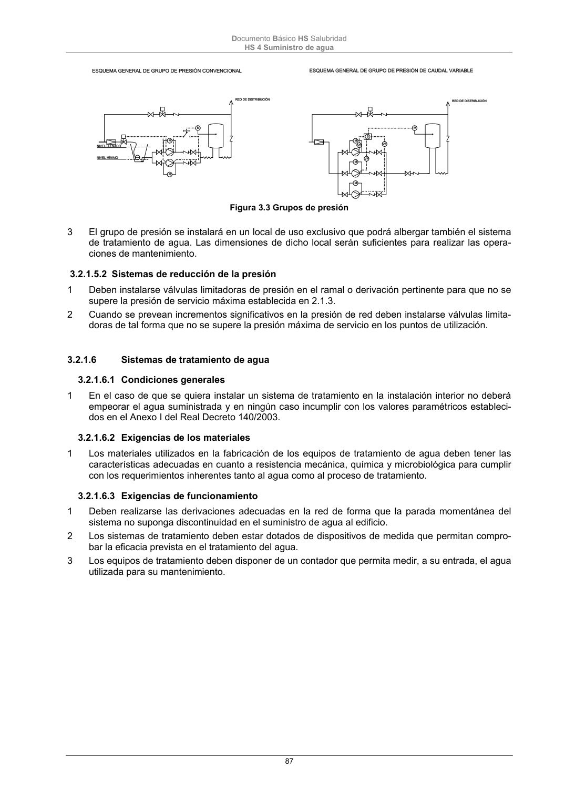

DB-HS · 3.2.1.6.2 Exigencias de los materiales · versión 2022-06-14 · capa oficial
Formatos: JSON compacto · Markdown · PDF fuente
Ámbito del documento · texto del ámbito · documento y tablas
ID técnico a0193 · PDF pág. 87 · jerarquía no validada por persona · contrastado con el literal de la página 87 (candidato tipográfico); no validado por persona · padre: raíz
3.2.1.6.2 Exigencias de los materiales 1 Los materiales utilizados en la fabricación de los equipos de tratamiento de agua deben tener las características adecuadas en cuanto a resistencia mecánica, química y microbiológica para cumplir con los requerimientos inherentes tanto al agua como al proceso de tratamiento.

PDF fuente redistribuible: copia fiel enlazada en esta página (SHA256 verificado).